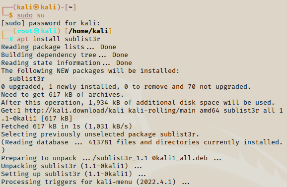

Hunting Subnet
In this section we will cover the number of various ways to gather information from the web. This will be a mixture of active and passive recon methods.
- You want to find sub domains of the target (if your target is a website)
- Example of a subdomain would be: info.sales.tesla.com or dev.tesla.com
- If we just stick to the generic website (like tesla.com) we are missing out on all the other possible subdomains & ports
sublist3r
We can install this tool from the terminal.
apt install sublist3r

Make sure to switch to root when installing
This will check to see if the web domain we give it has any subdomains. We call the name of the tool, then followed by the domain name. We have to inlude -d to signify we want to pass a domain as an argument.
sublist3r -d tesla.com

You can ignore the warning, the results will still be returned if found
As you can see it returns all the possible subdomains it found. You may be doing a search on domain that has many
subdomains and find that the seacrh is taking slow. You can speed this up with a method called threading where we take a function a multiply it several times - making the execution time quicker. To add a thread we simply add a -t to signify we want to create a thread then we add the number of threads we want.
sublist3r -d tesla.com -t 100

We can use the --help to look up the extra commands we could use.
sublist3r --help

crt.sh
This is a website you can use to check for any subdomains. All you need to do is enter the domain name and it will
return a list of all the subdomains found. We can add the wildcard entery for a subnet - *.tesla.com for the website to return all the SSH sub domains of the target's website.
Some of the subdomains to look for:- sso - single sign on
- toolbox
- dev
- vpn
- api-toolbox
- sso-dev
OWASP Amass
This is very similar to sublist3r but it give you a lot more information back. To install we should Google for their GitHub. It is in Kali Linux so all we need to do is install it (from root).
apt-get install amass

You can use tools such as tomnomnom that takes a list of domians and probes them for working http & https servers. Google: tomnomnom httpobe github.